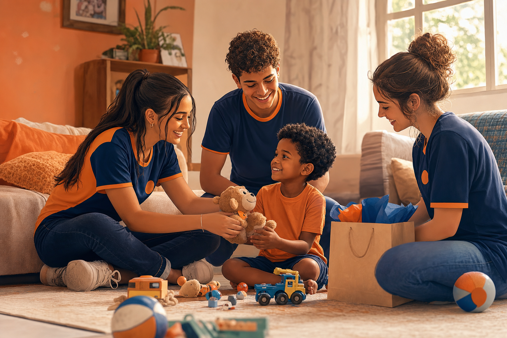
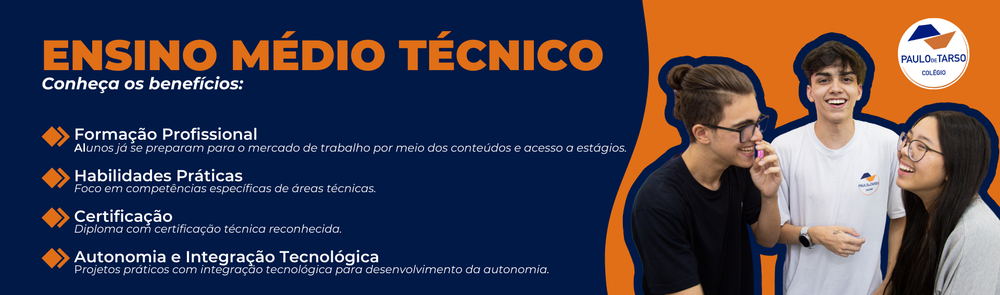
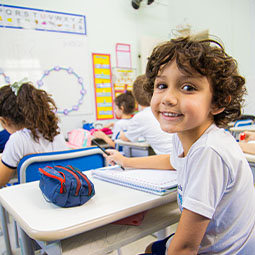
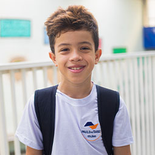

Doações que fazem falta
Alimentos não perecíveis, itens de higiene, roupas, brinquedos e material lúdico — tudo arrecadado e entregue com cuidado no dia da visita.
Plantamos oportunidades no coração das crianças.
Passar um dia com crianças nos lares: levar doações, brincar, ouvir e estar presente. Cada visita fortalece esperança e dignidade.

Não é sobre salvar alguém em um dia — é sobre lembrar uma criança de que ela importa.
Crianças em situação de vulnerabilidade social muitas vezes carecem de alimentação adequada, itens de higiene, brinquedos e, acima de tudo, de atenção e carinho no dia a dia.
O Semear Futuro organiza visitas aos lares: voluntários passam um dia com as crianças, levam doações, promovem brincadeiras e fortalecem o vínculo com as famílias — sempre com respeito, sigilo e orientação responsável.
Alimentos não perecíveis, itens de higiene, roupas, brinquedos e material lúdico — tudo arrecadado e entregue com cuidado no dia da visita.
Jogos, desenhos, música e conversa: momentos simples que devolvem autoestima e lembram à criança que ela não está sozinha.
Escutar a família, brincar junto e estar de verdade — sem pressa. É isso que transforma uma visita em memória boa.
0
Cerca de um terço das crianças viviam em lares abaixo da linha de pobreza.
+1
Uma visita, um brinquedo, um abraço: gestos que não substituem políticas públicas, mas acolhem agora.
0
Apoio comunitário devolve dignidade e abre portas para um futuro melhor.
Você pode ser parte disso. Cada inscrição é mais uma semente — junte-se às visitas do Semear Futuro.
Quero voluntariarAno Internacional dos Voluntários para o Desenvolvimento Sustentável
Voluntariado é dedicar tempo, talento e solidariedade sem remuneração — e, no Semear Futuro, isso vira visitas, doações e brincadeiras para crianças que mais precisam de acolhimento.
A ONU declarou 2026 o Ano Internacional dos Voluntários para o Desenvolvimento Sustentável, alinhado aos Objetivos de Desenvolvimento Sustentável (ODS).
Em 2026, a ONU celebra o voluntariado — e nós respondemos com lares visitados, mãos estendidas e sorrisos compartilhados.
Instituição que apoia o Semear Futuro — a causa da infância continua em primeiro lugar
O Semear Futuro nasce no Colégio Paulo de Tarso e mobiliza alunos e famílias em favor de crianças em vulnerabilidade. A Direção acompanha datas, roteiro e contato com as famílias — para que cada visita seja segura e respeitosa.
Conheça o colégio



Rua Mazzini, 61 — Aclimação — São Paulo — SP
Site do colégioAssim funciona na prática — do planejamento ao abraço na porta do lar.
Levar presença, doações e momentos de alegria a crianças em situação de vulnerabilidade, em visitas organizadas com apoio da Direção.
Equipes de voluntários visitam lares para passar um dia com as crianças: conversar, brincar, presentear com doações e fortalecer vínculos de cuidado.
Nos lares das famílias — cada equipe segue roteiro e orientações combinados com a Direção.
Datas: a combinar (calendário em definição para 2026).
Conte como quer ajudar. Seus dados ficam salvos só neste navegador, com carinho e privacidade.
Ana Flávia
Site do projeto Semear Futuro desenvolvido para a aula de Desenvolvimento Web.